비서-2급 (2014-05-25 기출문제)
1과목: 비서실무
1. 사장님께서 평소보다 출근이 늦어져서 운전기사에게 막 전화하려던 때에 외부에서 사장님을 찾는 전화가 왔다. 이때 사장비서의 전화응대 중 가장 바람직한 것은?
- “그렇지 않아도 사장님께서 출근이 늦어지셔서 제가 기사분에게 연락드리려던 참이었습니다. 제가 연락이 되면 바로 전화 드리겠습니다.”
- “죄송합니다. 사장님께서 몸이 편찮으셔서 오늘 병원들러서 좀 늦게 오신다고 했습니다. 들어오시는 대로 전화 연결하겠습니다.”
- “죄송합니다만 지금은 전화를 받으실 수 없습니다. 메모를 남겨주시면 저희가 전화를 드리겠습니다.”
- “사장님께서는 출근 시간이 일정하지 않으십니다. 오후시간 대에 전화를 주시면 확실히 연결해드릴 수 있습니다.”
(정답률: 70%)

2. 다음 중 비서 업무 수행 자세로 가장 바람직한 것은?
- 상사가 출력을 지시한 인사 관련 문서를 프린터에 출력시켜 놓고 그 사이에 긴급한 다른 일을 처리한다.
- 사무실 밖으로 외출 시 사원증을 상의 주머니에 넣고 회사서류 봉투는 회사이름과 로고가 보이지 않도록 유의한다.
- 마감이 촉박한 업무관련 문서는 집에 가져가서 하더라도 마감일을 준수한다.
- 동료비서들과 점심식사를 하면서 오전에 처리하지 못한 업무에 대해 조언을 구한다.
(정답률: 78%)
3. 다음 중 직장 내 화법에 대한 예시로 가장 부적절한 것은?
- 직함 없는 동료끼리 남녀 구분 없이'○○○씨'라고 불렀다.
- 같은 직함이지만 나이가 많은 동료에게'○○○선배님'이라고 불렀다.
- 상사의 남편을'○선생님', '○○○선생님'이라 불렀다.
- 아버지의 성함을 소개할 때“저희 아버님의 함자는 ○자 ○자이십니다.”라고 말했다.
(정답률: 50%)
4. 상공유통(주)의 사장 비서인 박진영씨가 수행하고 있는 아래의 금전관련 보좌업무 중 가장 올바른 것은?
- 사장님께서 법인카드 사용 후 주신 영수증을 하루가 지나기 전에 경리과에 바로 제출하고 한 부를 복사해서 내용별로 분류하여 보관해 두었다.
- 상사의 정확한 소액 현금 관리를 위해 지출이 발생될 때 마다 경리과에 영수증과 증빙서류를 제출하였다.
- 사장님께서 사장실에서 사용할 사무용품을 특별 주문 하셔서 인터넷으로 주문 후 법인카드로 결재하였다.
- 소액현금 출납장부에 지출 내용의 관련항목이 없어 항목을 추가하여 작성하였다.
(정답률: 14%)
5. 아래 내용으로 신제품 설명회를 준비하는 과정에서 확인해야 할 사항으로 가장 적절치 않은 것은?
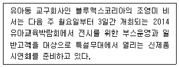
- 시연에 필요한 교구
- 필요한 기자재 목록
- 좌석배치
- 참석자의 명찰과 명패
(정답률: 73%)
6. 한국건설 송시연 비서는 거래처 임원 비서로부터 상사와의 면담을 요청받았다. 송 비서가 면담 약속을 할 때에 분명하게 확인해야 할 정보에 대해 설명한 것으로 가장 거리가 먼 것은?
- 상대방이 상사와 처음 만나는 사람이라면 인터넷 인물정보 사이트를 통해 면담 예정자의 신상정보를 검색하여 보고 드린다.
- 상대방이 면담 용건을 알리기를 꺼리는 경우에는 배려차원에서 더 이상 묻지 않는다.
- 회의실이나 접견실 등 만날 장소를 미리 예약해 둔다.
- 상대방의 성명, 직장, 직책은 물론 직장의 소재지와 전화번호도 확인해야 한다.
(정답률: 79%)
7. 신비서는 상사의 지시내용에 따라 업무를 수행하고 결과를 보고 드리고자 한다. 신비서가 보고 시 유의할 점으로 가장 적절한 것은?(7번 공통지문 문제)
- 뉴욕 출장 항공편과 호텔 예약 사항을 문서로 정리하여 보고한다.
- 일정표를 확인하니 치과 예약을 변경하고자 하는 수요일에 거래처와의 면담 약속이 있어 면담 약속을 목요일로 변경한 후 보고 드렸다.
- 2시에 면담하시고자 한 기획담당 상무가 오후 외근으로 불가능하여 다음 날 오전 10시에 오시라고 하였다.
- 뉴욕 출장 항공편의 좌석이 만석이어서 우선 대기자 명단에 올리고 예약확인이 되면 그 때 보고 드리도록 한다.
(정답률: 76%)
8. 아래 내용을 읽고 상공무역의 구민지 비서가 이러한 회사의 철학과 사업내용을 좀 더 많이 알릴 수 있도록 수행하는 홍보업무에 대한 설명으로 가장 적절치 않은 것은?
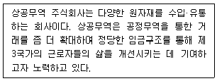
- 홈페이지나 기업블로그의 내용을 접견실이나 대기실에 부착함으로써 회사의 철학과 사업내용에 대해 좀 더 적극적으로 알린다.
- 회사를 방문하는 내방객을 위해 준비하는 차와 음료를 회사에서 거래하는 공정무역커피나 차로 준비하여 소개한다.
- 회사를 홍보하는 팜플렛이나 소개책자를 접견실에 비치하여 손님응대에 활용한다.
- 거래를 좀 더 확대시킬 수 있도록 필요한 정보를 탐색·수집하여 거래처 사람을 확보한다.
(정답률: 46%)
9. 출장을 마치고 수요일 오전에 출근하기로 예정된 상사의 일정이 금요일 오전 출근으로 변경되었다. 이와 같은 변경으로 인한 비서의 업무처리로 가장 적절치 않은 것은?
- 일정의 변경을 일정표에 수정하고 관련된 부서에 통보한다.
- 수요일, 목요일에 소화해야 하는 일정을 모두 금요일에 진행할 수 있도록 조정한다.
- 상사의 개인적인 일정도 확인하여 조정이 필요한 부분이 있다면 처리한다.
- 변경된 일정표를 상사에게 보고하고 확인한다.
(정답률: 90%)
10. 신영진 비서는 사장님, 상무님과 함께 신사옥 부지 매입건으로 외근을 하게 되었다. 자동차 탑승 시 상석에 대한 설명으로 가장 바르게 설명한 것이 아닌 것은?
- 사장님은 운전기사 대각선 뒷좌석에 탑승한다.
- 비서는 조수석에 탑승한다.
- 운전기사가 없이 상사가 직접 운전하게 되는 경우 비서와 상무는 모두 뒷좌석에 앉는다.
- 일반적으로 상석이 있지만 상사가 특별히 원하는 좌석이 있다면 그 쪽으로 착석토록 한다.
(정답률: 72%)
11. 직장 내 동료와의 원만한 인간관계 유지를 위하여 유의해야 할 사항으로 가장 적절한 것은?
- 동료가 필요로 하는 정보는 업무 공유 차원에서 제공한다.
- 상사의 지시를 타부서에 전달 할 경우 비서의 의견은 배제한다.
- 갑자기 급한 일로 돈이 필요한 동료에게 돈을 빌려준다.
- 비서의 노동조합 가입 여부는 비서가 판단하여 결정한다.
(정답률: 48%)
12. 거래처 회사에 대금관련 주제로 공문을 보내려고 한다. 회사의 이름 뒤에 쓰이는 호칭으로 적절한 것은?
- 貴中
- 職位
- 貴下
- 親展
(정답률: 40%)
13. 다음 중 경조사 업무를 처리하는 요령 중 가장 부적절한 것은?
- 회사의 모든 경조사의 경우 회사 경조 규정과 선례에 따라 비서가 자율적으로 처리한다.
- 평상시 경조사 관련 관계 부처의 직원 및 주위 사람들을 통해 정보 수집에 주의를 기울인다.
- 경조사 발생 시 신속한 화환 전달을 위하여 평소 화원 거래처 목록을 정리해 둔다.
- 경조사 관리를 위하여 상사가 활동 중인 단체 소식지의 회원 동정란을 매일 살핀다.
(정답률: 68%)
14. 새로 부임한 외국인 상사를 보좌하는 비서의 업무태도로서 가장 부적절한 것은?
- 자국 음식을 판매하는 식당의 정보를 수집하여 제공해 주도록 한다.
- 외국인의 경우 공과 사의 구분이 명확하므로 외국인 의료서비스 정보제공과 같은 사적인 영역에 대해서는 관여하지 않는다.
- 상사의 출신 국가 뉴스를 스크랩하여 전달한다.
- 돌발 사고에 대비하여 외국인 등록증과 여권 사본을 복사해 두고, 자국의 자택 전화번호나 가족의 전화번호를 메모해 두고 휴대한다.
(정답률: 78%)
15. 한신증권에 근무하는 조선영 비서는 최근 증시 폭락으로 인해 고객들로부터 많은 항의전화를 받고 있다. 다음 전화 응대 방법 중 비서로서 가장 적절한 것은?
- 화가 많이 나서 전화한 고객에게 사과 한 후 관련 부서 담당자에게 연결해 주었다.
- 일단 상대방이 화를 내는 이유를 충분히 들어 준 후, 손해를 만회할 수 있는 최근 신상품을 소개하였다.
- 타사와 비교하며 항의할 경우 타사의 단점과 한신증권의 좋은 점을 비교하며 설명해 주었다.
- 고객의 말을 경청한 후 문제를 파악해서 비서 나름대로의 조언을 해 주었다.
(정답률: 81%)
16. 비서직은 사회적 요구 변화에 따라 그 역할이 꾸준히 변화해왔으며, 최근에는 단순 사무직의 역할보다는 '지식 근로자'로서의 비서직이 부각되고 있으며, 상사를 보좌하는 비서에서 팀 비서 또는 공동비서로서의 역할이 강조되며 다기능, 다기술의 적극적인 역할 수행이 요구되고 있다. 다양한 분야에서 다기능 역할을 수행하는 비서에 대한 설명으로 가장 적절치 않은 것은?
- 법률에 관련된 문서를 처리하고 소송 문의, 의뢰인 대응 등의 업무 뿐 아니라, 의뢰자 접대, 판례조사, 법원 연락 등의 업무를 수행한다.
- 병원 회계 제도, 의료 보험 사무, 결제 제도 등에 대한 지식을 갖추고 병원의 전문경영인이 병원관리를 할 수 있도록 보좌한다.
- 국내 기업의 재무제표 작성, 결산서 감사, 한국과 외국과의 회계원칙 비교, 한국기업의 재무제표를 영어로 번역 및 재편성 등의 업무를 수행한다.
- 국회의원이나 지방의회 의원 비서는 입법활동 보좌, 출신 지역구와의 연락 사무 등에 큰 비중을 두고 일하며, 국가에서 별정직 공무원으로 분류한다.
(정답률: 44%)
17. 대한물산 박소라 비서는 연말에 발송할 달력과 연하장 제작 및 발송을 준비하고 있다. 달력은 VIP 고객을 위한 달력과 탁상용 달력을 제작할 예정이며, 연하장은 국문과 영문을 별도로 제작할 예정이다. 박 비서가 달력과 연하장을 제작 및 발송하고자 할 때 유의해야 할 점으로 가장 거리가 먼 것은?
- 발송 목록은 전년도에 상사에게 연하장 및 카드를 보내온 주소록을 기초로 해서 변경된 회사명, 주소, 직위명 등을 점검해 수정 작업한다.
- 영문 연하장은 해외 발송용이므로 외국인들의 취향에 맞는 그림으로 제작한다.
- VIP 고객을 위한 달력은 포장용 박스를 함께 제작하여 우편 발송 시 훼손되지 않도록 유의한다.
- 연하장 및 달력 발송 주소록은 최종적으로 상사로부터 발송여부를 결재 받도록 한다.
(정답률: 78%)
18. 다음 중 아래 행사에서 만나게 될 주요 외국인 바이어에게 줄 수 있는 선물에 관한 매너로 가장 바르게 설명한 것은?
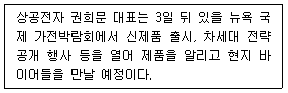
- 인도의 바이어에게 소가죽으로 만든 액자에 꽃그림을 넣어 선물하였다.
- 프랑스의 바이어에게 2009년산 샤또 무통 로칠드 와인을 선물하였다.
- 브라질의 바이어에게 벽면에 걸어 장식할 수 있는 한국 전통검을 선물하였다.
- 중국의 바이어에게 붉은 색으로 정성스럽게 포장한 홍삼제품을 선물하였다.
(정답률: 74%)
19. 다음 중 일정관리업무와 관련한 비서의 올바른 업무처리가 아닌 것은?
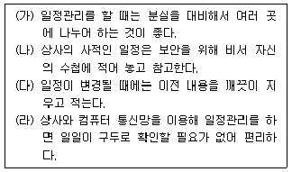
- (가), (나)
- (가), (나), (다)
- (나), (다), (라)
- (가), (나), (다), (라)
(정답률: 58%)
2과목: 경영일반
20. 다음 중 기업의 보상관리에 관한 설명으로 가장 적절하지 않은 것은?
- 임금수준을 결정할 때에는 종업원의 생계비 수준, 기업의 지급능력, 사회일반의 임금수준 등을 고려할 필요가 있다.
- 국내의 법정 복리후생에는 국민건강보험, 산업재해보상 보험, 고용보험, 국민연금 등이 포함된다.
- 직무급은 직무의 난이도, 위험조건 등을 감안하여 직무가 같으면 학력, 근무연한, 연령에 관계없이 같은 임금을 적용하는 것이다.
- 보상관리에서 임금은 기본급을 의미하며 각종 수당과 상여금은 복리후생에 포함된다.
(정답률: 56%)
21. 다음 중 E-business를 수행하는 기업에 대한 설명으로 가장 적절하지 않은 것은?
- 고객위주의 시장을 지향하면서 기업 간 전략적 제휴의 중요성이 축소되고 있다.
- 정보흐름을 구조화하고 통제하여 이를 전략적으로 활용할 수 있는 기업 능력이 더욱 중요해진다.
- 전자상거래를 통해서 소비자의 셀프서비스 욕구가 증가 된다.
- 정보사용의 효율성과 효과성을 올리기 위해 기업 전체시스템 통합의 필요성이 증대되고 있다.
(정답률: 75%)
22. 다음 중 동기부여이론에 관한 설명으로 가장 적절한 것은?
- 허즈버그의 2요인 이론에서 만족과 불만족은 연속의 개념으로서 임금 등의 불만족요인을 충족하여 직무만족을 유발시킬 수 있음을 나타낸다.
- 매슬로우의 욕구단계설에서는 동기유발을 시킬 수 있는 욕구가 계층구조를 이루고 있으며 욕구가 좌절되면 퇴행이 될 수 있음을 인정한다.
- 브룸의 기대이론에 따르면 기대감, 수단성, 보상의 가치 모두를 극대화시켜야 동기를 유발할 수 있다.
- 공정성 이론에 따르면 사람은 자신의 노력(공헌)에 대해 조직이 정한 절대적 보상기준에 따라 반응한다는 것이다.
(정답률: 29%)
23. 다음 중 목표관리(MBO : Management By Objective)의 특성에 대한 설명으로 가장 적절하지 않은 것은?
- 목표관리를 위해 관리자와 구성원 간의 공통목표를 설정한다.
- 목표관리는 경영자 한 사람이 지도 및 통제할 수 있는 하급자의 수를 증가시킬 수 있다.
- 목표관리는 종업원의 동기부여에 근거를 두고 조직 전체목표를 개인의 목표로 전환시키려는 노력으로 실행된다.
- 목표관리에서의 목표설정은 최고경영층이 종업원들에게 성과표준을 부과하고 종업원 개인별로 이를 달성하기 위한 목표를 가지게 된다.
(정답률: 17%)
24. 다음 중 기업의 흡수합병에 대한 설명으로 가장 적절한 것은?
- 결합하려는 모든 기업이 해산되고 새로운 기업을 설립하여 새로운 기업이 해산기업의 영업, 자산, 채무를 인계받는다.
- 두 개 이상의 기업이 청산절차를 거쳐 하나의 기업이 되는 기업결합수단이다.
- 합병기업 중 한 기업이 존속기업으로 남아 다른 기업의 모든 영업활동, 자산, 채무를 인계 받는다.
- 주주로부터 주식을 취득하는 방법을 통해 기업의 지배권을 얻을 수 있다.
(정답률: 61%)
25. 다음 중 “우리 회사의 기술력이 매우 우수하다.”는 점은 SWOT 분석에서 어디에 해당하는가?
- 강점(Strength)
- 약점(Weakness)
- 기회(Opportunity)
- 위협(Threat)
(정답률: 100%)
26. 적은 자본으로 창업하는 형태를 벤처창업과 소자본창업으로 구분할 수 있다. 다음 중 이에 대한 설명으로 가장 적절하지 않은 것은?
- 벤처기업은 고위험과 고성과를 특징으로 하는 기술집약적 중소기업이라고 할 수 있다.
- 소자본창업은 새로운 기술을 요구하는 지식집약적인 기업으로 대기업이 하기 어려운 특수한 사업 분야에서 나타난다.
- 벤처창업의 촉진요인으로 벤처캐피털의 성장, 코스닥 형성, 아웃소싱의 증가 등을 들 수 있다.
- 소자본창업은 위험도가 낮고 기존의 사업성이 분석된 안정적 사업에서 나타난다.
(정답률: 40%)
27. 다음 중 주가를 주당순이익으로 나눈 주가의 수익성을 나타내는 지표는 무엇인가?
- PER(Price Earning Ratio)
- PBR(Price Book-value Ratio)
- BPS(Book-value Per Share)
- EPS(Earning Per Share)
(정답률: 40%)
28. 한 조직의 구성원들이 공유하고 있는 가치관, 신념, 이념, 관습 등을 총칭하는 것으로 조직과 구성원의 행동에 영향을 주는 기본적인 요인을 무엇이라 하는가?
- 조직 문화
- 조직 몰입
- 조직 구조
- 인사 제도
(정답률: 93%)
29. 다음 마케팅 믹스 중에서 제품의 수요를 자극하는 활동으로 잠재 고객에게 정보를 제공하고 설득하기 위한 광고, 인적 판매, 홍보, 판매촉진 등의 모든 수단을 동원하는 것은 무엇인가?
- 가격(Price)
- 제품(Product)
- 판촉(Promotion)
- 유통(Place)
(정답률: 78%)
30. 다음 중 기업의 구매활동이 가치 창출에 더 많이 기여하도록 진화된 것으로, 공급업체와의 유기적인 업무 연계 및 정보 교환을 통하여 재고의 신속한 조달 및 적정한 재고를 유지하여 경영 성과를 높이기 위한 기능을 무엇이라 하는가?
- e-CRM
- e-Procurement
- e-SCM
- e-Commerce
(정답률: 46%)
31. 비공식 조직에 대한 다음 설명 중 가장 옳지 않은 것은?
- 조직도에 나타나 있지 않은 조직이다.
- 친목이나 취미, 동창 모임 등과 같이 자발적인 조직이다.
- 조직의 성과 향상에 부정적인 영향을 미치므로 공식조직으로 전환시키는 것이 좋다.
- 조직 전체의 목표와 충돌되는 경우도 있지만 종업원들에게 소속감과 만족감을 주고 비공식 커뮤니케이션이나 인적화합에 도움을 주기도 한다.
(정답률: 87%)
32. 중소기업의 특징에 대한 다음 설명 중 가장 옳지 않은 것은?
- 규모가 작아 환경 변화에 빠르게 대응이 가능하다.
- 틈새시장 확보에 유리하다.
- 경쟁이 치열하며 자금이나 인력의 확보 등에 어려움이 있다.
- 규모의 경제 효과를 통하여 경쟁력을 키울 수 있다.
(정답률: 73%)
33. 다음 중 기업의 사회적 책임을 강조하는 내용과 가장 거리가 먼 것은?
- 하청업체나 공급업체에 원재료나 부품 가공에 대한 충분한 대가를 지불하여야 한다.
- 기업 활동으로 인해 환경이 오염되지 않도록 해야 하며, 환경 보호를 위해 앞장서야 한다.
- 원가 절감을 위하여 신규 인력의 채용을 자제하고 원자재 구입단가를 동결해야 한다.
- 지역 사회의 현안 문제 해결을 위해 기업이 적극적으로 참여하여야 한다.
(정답률: 82%)
34. 다음에서 설명하고 있는 마케팅 기법은 무엇인가?
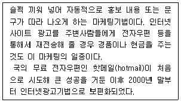
- 앰부시마케팅(Ambush Marketing)
- 넛지마케팅(Nudge Marketing)
- 바이럴마케팅(Viral Marketing)
- 바이러스마케팅(Virus Marketing)
(정답률: 40%)
35. 다음에서 설명하고 있는 회사는 무엇인가?
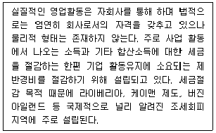
- 페이퍼컴퍼니
- 도관회사
- 유령회사
- 지주회사
(정답률: 48%)
36. 다음 중 경영조직의 형태에 대한 설명으로 가장 적절하지 않은 것은?
- 위원회 조직이란 경영정책이나 특정한 과제의 합리적인 해결을 목적으로 각 부분에서 여러 사람들을 선출하여 구성한 위원회를 조직 내에 설치하는 것이다.
- 라인조직은 수직적 분화에 중점을 두고 관리자의 업무를 기능화의 원칙 또는 기능별 전문화의 원칙에 따라 부문마다 전문적인 관리자를 두고 지휘·감독하는 조직형태이다.
- 프로젝트 조직은 일시적이고 잠정적인 조직이다.
- 사업부제 조직은 유능한 경영자 육성의 필요성이 증대되면서 널리 보급되었다.
(정답률: 41%)
37. 다음 중 기업의 분류와 형태에 대한 설명으로 가장 옳지 않은 것은?
- 공기업에는 국영기업, 지방공익기업, 공사, 공단 등이 있다.
- 비영리기업은 정부 재정 자금의 조달이나 공공재의 효율적인 조달·분배 등의 특정한 목적 달성의 역할을 수행한다.
- 익명조합의 영업자는 업무를 집행하고 이에 대해 무한책임을 진다.
- 합자회사는 2인 이상이 신뢰관계를 중심으로 공동 출자하여 설립되는 회사로 사원은 회사의 채무에 대해 무한책임을 진다.
(정답률: 48%)
38. 다음 중 자본조달 및 운영과 관련한 설명으로 가장 적절하지 않은 것은?
- 자본조달 기능이란 투자에 소요되는 자본을 어떻게 효율적으로 조달할 것인가를 결정하는 기능이다.
- 자본조달결정의 목표는 타인자본 없이 자기자본만으로 자본을 조달하는 것이다.
- 자금운영 기능은 조달된 자본을 효율적으로 배분하고 합리적으로 운용하는 기능이다.
- 자금의 조달과 운영을 한 눈에 볼 수 있는 표가 재무 상태표이다.
(정답률: 87%)
39. 다음 중 환경요인별 기업환경의 분류로서 그 성격이 가장 다른 하나는 무엇인가?
- 사회제도
- 국가의 경제체제
- 산업구조
- 재정금융정책
(정답률: 30%)
3과목: 사무영어
40. 다음 전화 대화 후 B가 취할 행동으로 가장 알맞은 것은?
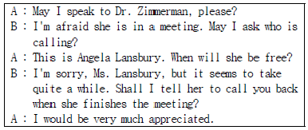
- Tell Dr. Zimmerman to hang up the phone.
- Deliver a phone message to Angela to call back.
- Prepare a phone message for Dr. Zimmerman.
- Tell Angela when Dr. Zimmerman will be available.
(정답률: 34%)
41. Read the following telephone conversation and choose one which is not true to the conversation.
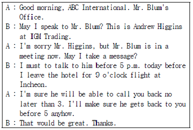
- Telephone message for the above conversation should be checked as 'Urgent'.
- The secretary is quite confident that her boss will be free before 3.
- Mr. Higgins seems to be departing the city tonight.
- Mr. Blum will call back between 5 and 9 today.
(정답률: 63%)
42. Read the following dialogue and answer the question. Which of these is not true?
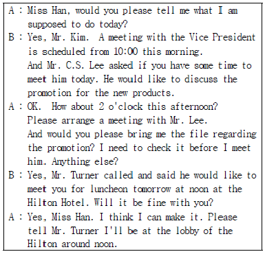
- Mr. Kim is going to have lunch with Mr. Turner today.
- Mr. Kim needs to review the file about the promotion.
- Mr. C. S. Lee and Mr. Kim will meet today.
- Miss Han will contact Mr. Turner to make an appointment.
(정답률: 70%)
43. Read the following letter and choose the phrase which has a grammatical error.
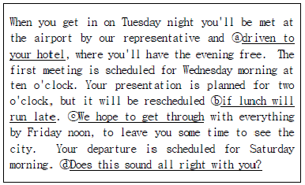
- ⓐ
- ⓑ
- ⓒ
- ⓓ
(정답률: 20%)
44. 다음 중 빈 칸에 들어갈 표현으로 가장 적당한 것은?
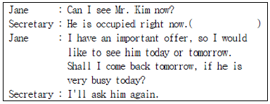
- May I ask what your visit is regarding?
- Would like to take a message?
- He is expecting you.
- What's the matter with you?
(정답률: 57%)
45. Which of the followings is the most appropriate department name for the blank?
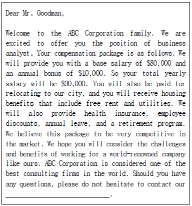
- Planning Department
- Human Resources Department
- Marketing Department
- Research & Development
(정답률: 61%)
46. Which of the followings is not appropriate to replace the underlined ⓐ, ⓑ, ⓒ and ⓓ each?
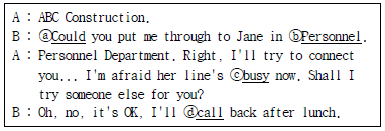
- ⓐWould
- ⓑR&D
- ⓒengaged
- ⓓring
(정답률: 50%)
47. 다음 글의 밑줄 친 부분에 들어갈 표현으로 적당하지 않은 것은?
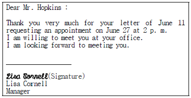
- Sincerely,
- Cordially yours,
- With love,
- Yours truly,
(정답률: 48%)
48. Choose one which does not match each other.
- CPA : Critical Public Accountant
- IMF : International Monetary Fund
- ERP : Early Retirement Program
- M&A : Merger and Acquisition
(정답률: 25%)
49. Belows are sets of Korean sentence translated into English. Choose one which does not match correctly each other.
- The motion is carried unanimously. - 그 동의안은 만장일치로 부결 되었습니다.
- Do you object to the project? - 그 프로젝트에 반대 하십니까?
- We speak each other's language. - 우리는 의견이 일치하는군요.
- Final decision on this matter will be made by majority. - 이 문제에 대해 다수결로 결론을 내리겠습니다.
(정답률: 25%)
50. Which of the followings is the most appropriate expression for the blank?
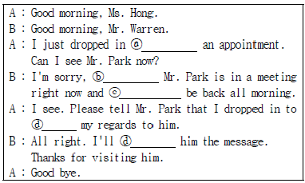
- ⓐwith
- ⓑand
- ⓒwon't
- ⓓtake
(정답률: 25%)
51. 아래 Memo의 빈칸에 들어갈 가장 알맞은 단어를 고르시오.
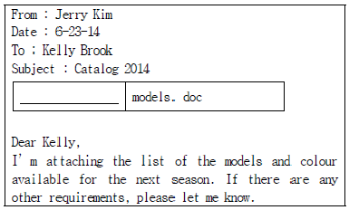
- Attachment
- Document
- Post Script
- Carbon copy
(정답률: 40%)
52. Read the conversation below and choose the most appropriate sentence for the blank.
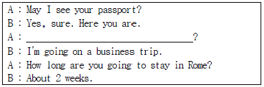
- What is your occupation?
- Where are you going to?
- What's the purpose of your trip?
- How is your business going?
(정답률: 70%)
53. Choose the one which matches the best with the contents of the below letter.
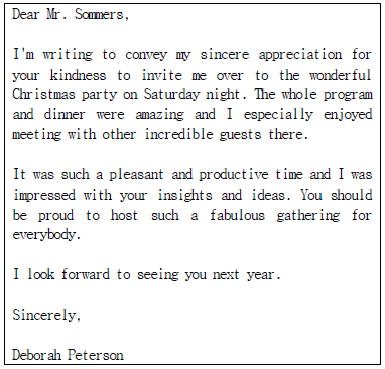
- Invitation letter
- Recommendation letter
- Condolence letter
- Thank you letter
(정답률: 64%)
54. Read the following part of a business letter and choose the most appropriate word for the underlined blank.
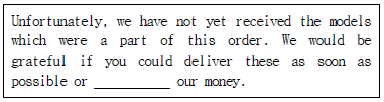
- account
- refund
- purchase
- transport
(정답률: 57%)
55. Choose one which is true to the below envelope.
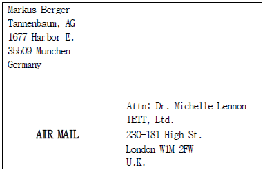
- Only Mr. Berger's secretary can mail this letter.
- Dr. Lennon is the direct recipient of this letter.
- It is a confidential letter.
- It is a domestic mail.
(정답률: 32%)
56. Which is not true according to the following guidelines?
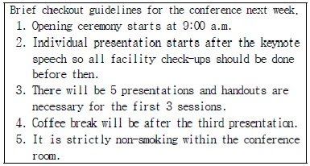
- 기조연설 후에 개별발표가 있을 예정이다.
- 회의장실내에서는 금연이다.
- 모든 발표마다 유인물을 준비해야한다.
- 세 번째 발표 후에 휴식시간이 있을 예정이다.
(정답률: 60%)
57. Read the itinerary and choose one which is not true to it.
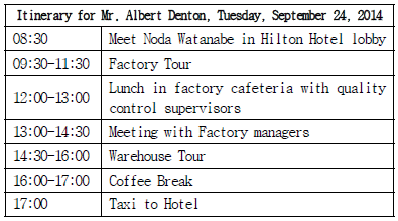
- They are having lunch at the factory.
- The factory tour is in the afternoon.
- The warehouse tour takes an hour and a half.
- They are having break time after the warehouse tour.
(정답률: 61%)
58. Choose one which is not appropriate for the underlined blank ⓑ in conversation.(59번 공통지문 문제)
- May I ask a favor of you?
- Why don't you have a seat?
- I'll bring you something to drink.
- I'll let you know as soon as he arrives.
(정답률: 32%)
4과목: 사무정보관리
59. 다음 중 사용목적이 다른 응용 소프트웨어는?
- 프리미어
- 프레지
- 키노트
- 파워포인트
(정답률: 27%)
60. 다음 중 쾌적한 사무환경을 만들기 위한 노력으로 가장 적절하지 못한 것은?
- 건조한 실내에 가습기를 설치해 적정습도를 유지했다.
- 사무실평형에 맞는 공기청정기를 설치했다.
- 청결한 가습기 관리를 위해 가습기 살균제를 사용하였다.
- 미항공우주국(NASA)에서 발표한 공기정화식물을 사무실에 두었다.
(정답률: 52%)
61. 일 년에 한번 여는 주주총회 관련 업무를 일임하게 된 김비서는 이와 관련한 주주총회 회의록, 안내문, 위임장, 소집통지서 등의 문서를 관리하게 되었다. 다음 중 주주총회 업무관리를 위한 파일링 방법으로 가장 비효율적인 것은?
- 완결된 문서는 날짜순으로 정렬하여 최근문서가 앞으로 오도록 철했다.
- 주주총회에 불참한 주주의 위임장은 개별 폴더에 주주이름의 가나다순으로 정리했다.
- 연도별 주주총회를 각각의 폴더에 정리하여 연도순으로 정리했다.
- 문서가 발생되는 순서대로 문서에 번호를 부여하여 번호 순으로 정리하였다.
(정답률: 46%)
62. 다음 중 명함관리 방법이 가장 바람직하지 않은 경우는?
- 김비서는 변경된 명함을 받으면 기존의 것은 버리고 새 것으로 대체한다.
- 박비서는 동일한 사람의 변경된 명함을 최신 것을 앞으로 오게 하여 모두 정리해 둔다.
- 이비서는 명함을 정리할 때 불필요하다고 판단된 명함은 1년에 1~2번 과감히 폐기한다.
- 장비서는 명함의 뒷면에 받은 일시와 그 사람의 특징 등을 간단히 메모하여 둔다.
(정답률: 36%)
63. 김비서는 위의 표를 바탕으로 종가의 시간적 추이를 볼 수 있는 그래프를 작성하려고 한다. 이때 가장 적합한 그래프 형식은?(65번 공통지문 문제)
- 원형 그래프
- 가로막대 그래프
- 꺾은선 그래프
- 방사형 그래프
(정답률: 87%)
64. 아래 설명에 해당하는 용어를 순서대로 나열한 것은?
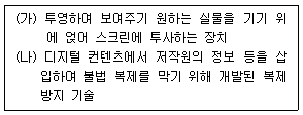
- (가) 실물화상기 - (나) 워터마크
- (가) 실물화상기 - (나) 영상저작권
- (가)오버헤드프로젝터 - (나) 워터마크
- (가)오버헤드프로젝터 - (나) 영상저작권
(정답률: 79%)
65. 다음 중 다양한 형태의 문서와 자료를 그 생성부터 폐기에 이르기까지 전체 생명주기에 걸쳐 일관성 있게 전자적으로 통합 관리하기 위한 시스템을 이르는 용어는 무엇인가?
- CALS
- EDI
- EDMS
- EC
(정답률: 53%)
66. 다음 중 전자결재시스템에 대한 설명으로 가장 옳지 않은 것은?
- 종이서류와 병행하여 문서를 두 가지 방법으로 저장 및 관리하므로 문서 보안이 매우 뛰어나다.
- 결재에 필요한 시간을 단축시켜 정보관리의 효율성을 증대시킬 수 있다.
- 결재 경로 지정이 가능하며 결재 진행 중에도 결재 경로의 변경이나 수정이 가능하다.
- 결재 상황을 조회할 수 있으며, 결재 과정에서 의견을 첨부할 수도 있다.
(정답률: 70%)
67. 다음 중 문서의 파일링 방법에 대한 설명으로 가장 옳지 않은 것은?
- 동일한 회사의 문서가 5개 이하인 경우 잡 폴더에 넣어 둔다.
- 동일한 회사의 문서는 반드시 한 개의 폴더 안에 넣어서 보관한다.
- 처리가 끝난 문서는 문서철에 최근 문서가 앞에 오도록 배열한다.
- 문서를 정리하기 전에 정리해도 되는지 검사하는 단계를 거친다.
(정답률: 48%)
68. 다음 중 상사 출장 시 비서의 우편물 처리방법에 대한 설명으로 가장 옳지 않은 것은?
- 단기 출장인 경우 개인 우편물은 개봉하지 않고 상사의 책상에 놓아둔다.
- 업무상 대외비 또는 특수 우편물은 개봉하지 않고 상사의 업무 대행자에게 전달한다.
- 업무용 서신은 개봉하여 일부인을 찍고 복사한 후, 사본은 보관하고 원본을 상사의 업무 대행자에게 전달한다.
- 중요한 안건은 필요에 따라 출장지의 상사에게 보고해 지시를 받는다.
(정답률: 57%)
69. 다음 중 컴퓨터 범죄 및 보안에 관한 설명으로 가장 적절하지 않은 것은?
- 제로데이 공격(Zero day Attack) : 보안 취약점이 발견 되었을 때 그 문제의 존재 자체가 널리 공표되기도 전에 해당 취약점을 악용하여 이루어지는 보안 공격
- 디도스 공격(DDoS) : 한꺼번에 수많은 컴퓨터가 특정 웹사이트에 접속함으로써 비정상적으로 트래픽을 늘려 해당 사이트의 서버를 마비시키는 해킹방법
- 파밍(Pharming) : 불특정 다수에게 메일을 발송해 위장된 홈페이지로 접속하도록 한 뒤 인터넷 이용자들의 금융 정보 등을 빼내는 신종 사기 수법
- 스파이웨어(Spyware) : 사용자의 동의 없이 설치되어 광고나 마케팅용 정보를 수집하거나 중요한 개인 정보를 빼내는 악의적 소프트웨어
(정답률: 42%)
70. 이비서는 새로운 대표이사의 취임을 맞아 취임 인사장을 작성하였다. 이비서가 작성한 인사장 문구 중 맞춤법이 올바른 것끼리 짝지어진 것은?
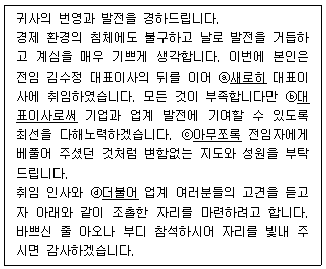
- ⓐ, ⓑ
- ⓑ, ⓒ
- ⓒ, ⓓ
- ⓐ, ⓒ
(정답률: 67%)
71. 다음 우편서비스에 대한 설명 중 가장 적절하지 않은 것은?
- 내용증명 : 어떤 내용의 것을 언제 누가 누구에게 발송하였는가 하는 사실을 발송인이 작성한 등본에 의해 우체국장이 공적인 입장에서 증명하는 제도
- 배달증명 : 현금을 우편물로 발송하려 할 때 이를 넣은 봉투에 그 금액을 표기한 우편물
- 요금별납 : 우편물의 종별, 중량, 우편요금 등이 같고 동일인이 동시에 발송하는 우편물로 1회 접수물량이 10통이상인 경우'요금별납'표시만을 하고, 요금은 현금으로 별도 납부하는 우편 서비스
- 요금후납 : 요금 및 특수취급 수수료를 납부하지 않고 1개월간 발송예정우편물 요금의 2배에 해당하는 금액을 담보금으로 제공한 뒤, 1개월간의 요금을 다음 달에 승인 우체국에 납부하는 서비스
(정답률: 72%)
72. 다음 중 아래 설명에 해당하는 네트워크는?
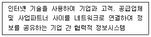
- 인트라넷
- 커머스넷
- 로제타넷
- 엑스트라넷
(정답률: 31%)
73. 다음 중 효과적인 프레젠테이션을 위한 시각자료를 작성할 때 유의해야 할 점으로 가장 부적절한 것은?
- 중요 단어는 밑줄을 치는 등 표시를 하고, 눈에 띄게 하고 싶은 포인트는 강조한다.
- 가능한 한 많은 내용을 입력하여 청중의 이해를 돕는다.
- 숫자는 도표보다 그래프화 하는 것이 더 효과적이다.
- 문자체는 명조체보다 글자에 각이 진 고딕체가 더 선명하여 보기에 좋다.
(정답률: 90%)
74. 상공정밀의 오비서는 상사의 관심분야에 대해 신문이나 잡지를 스크랩 하고 있다. 다음 중 신문 스크랩 방법으로 가장 적절하지 않은 것은?
- 오려내려는 기사 뒤편에 스크랩하고 싶은 다른 기사가 있으면 한쪽 면은 복사한다.
- 오리려고 하는 기사를 미리 표시해 두었다가 빠뜨리지 않도록 한 후 오려낸다.
- 오려낸 기사는 날짜별로 구분하여 정리한다.
- 기사는 당일은 스크랩하지 않고 다음날 신문이 온 후에 스크랩 한다.
(정답률: 14%)
75. 최비서는 이번 국제회의에 참가하는 150명의 참가자들의 이름표를 출력하려고 한다. 이미 참가자들의 이름과 직위, 회사명은 엑셀파일로 정리가 되어 있고, 이 정보를 가로 10cm, 세로 5cm 이름표에 배치하여 출력해야 한다. 이 때 사용할 수 있는 컴퓨터 기능으로 가장 적절한 것은?
- 정렬
- 필터
- 메일머지
- 피벗테이블
(정답률: 53%)
76. 다음 중 이메일 관련 용어에 대한 설명이 가장 적절하지 못한 것은?
- SMTP : 다른 메일 서버로 메일을 보낼 때 사용하는 프로토콜이다.
- POP3 : 메일서버에 도착한 메일을 클라이언트 사용자가 전송받을 때 이용하는 프로토콜이다.
- MUA : 사용자가 메일을 보내고 받을 때 사용하는 클라이언트 프로그램이다.
- MTA : 사용자로부터 IMAP에 의해서 전달받은 메시지를 다른 메일서버로 전달해주는 프로그램이다.
(정답률: 47%)
77. 다음 문서처리인에 대한 설명으로 옳은 것은?
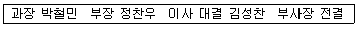
- 이 문서를 기안한 사람은 정찬우 부장이다.
- 이 문서의 전결권자는 부사장이고 최종책임은 기관장인 사장이 진다.
- 이 문서는 부사장의 부재중에 직무대행자 김성찬 이사가 결재한 문서이다.
- 이 문서는 전결권자인 부사장의 사후 결재가 꼭 필요하다.
(정답률: 48%)